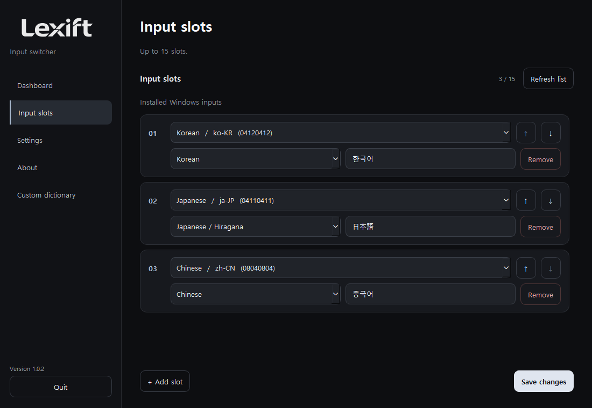
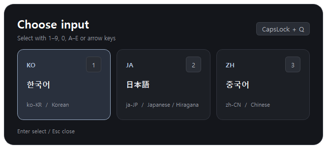
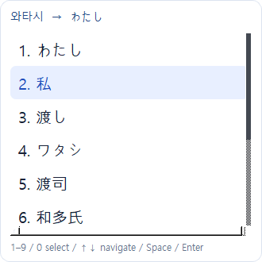
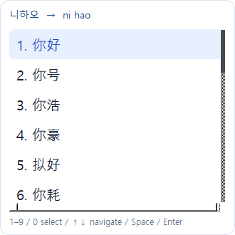
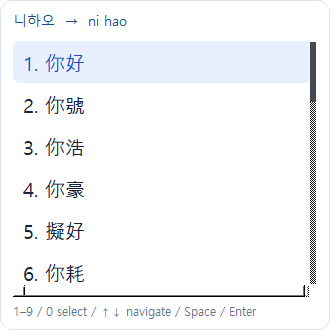
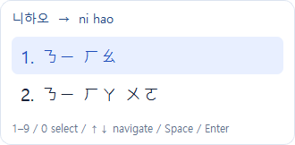
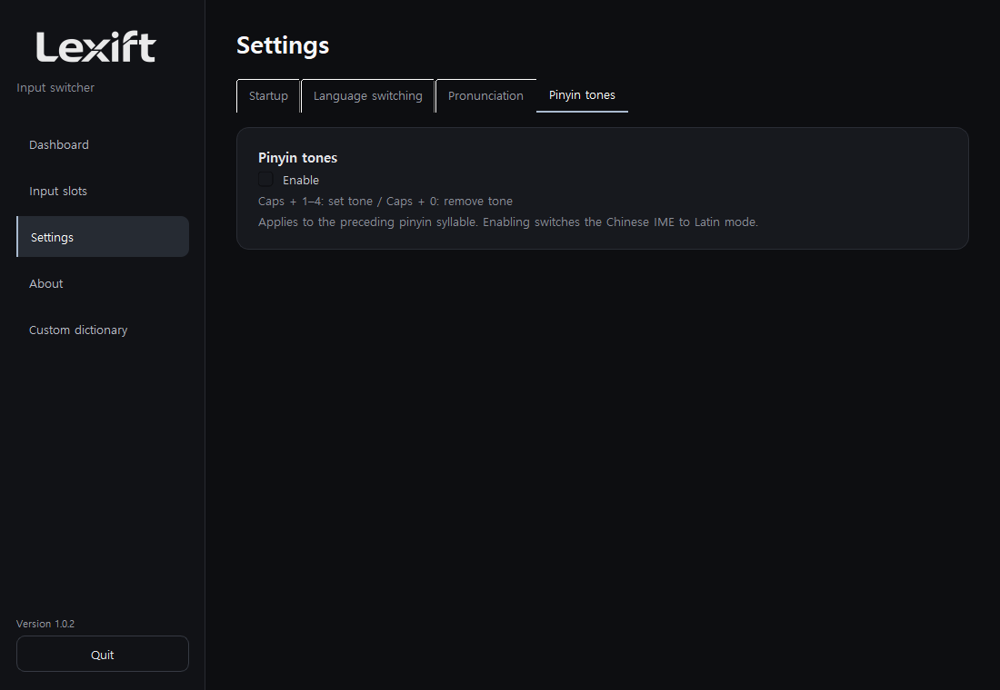
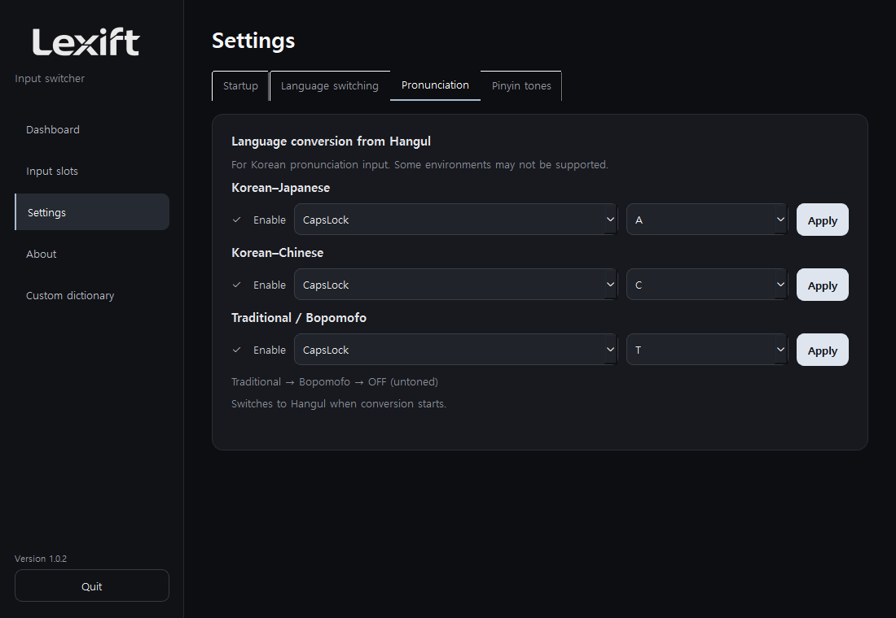
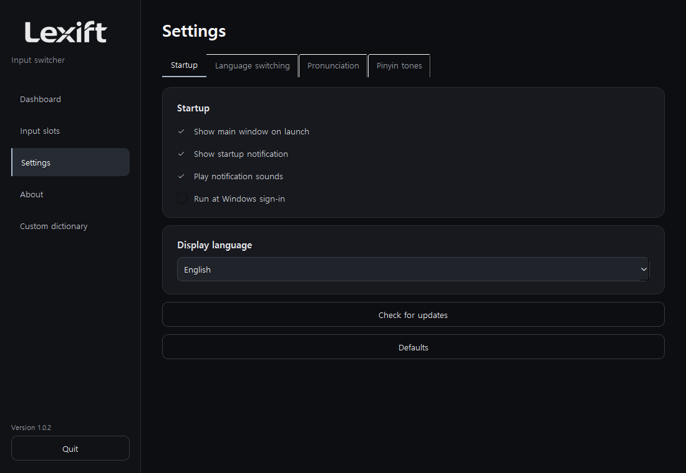
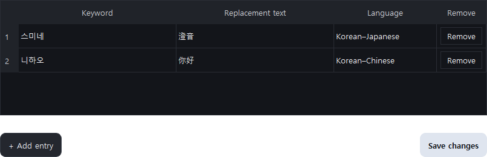

User guide
Overview
Switch input languages. Type the pronunciation. Keep writing.
Windows 10 / 11 x64. The portable download does not require Python.
Download 1.0.2 ↗Installation
Extract the ZIP and run Lexift.exe. Install the required keyboards in Windows, then register them under Input slots.

Input switching
Press Caps + Q to open the input list. Use the arrows and Enter, or press the displayed number.

Japanese input
Press Caps + A in an input field, then type Japanese pronunciation in Hangul. Example: 와타시 → 私. Press the shortcut again to turn it off.

Candidates: ↑↓ move; Space / Enter confirm; 1–9 / 0 select by number; Esc close.
Pronunciation conversion switches to Hangul on activation. It is designed for Korean input and may not be supported in every environment.
Simplified Chinese
Press Caps + C and type Mandarin pronunciation in Hangul. Example: 니하오 → 你好. Candidates use Simplified Chinese.

Traditional / Bopomofo
Caps + T cycles through Traditional → Bopomofo → OFF. Examples: 중궈 → 中國; 니하오 → ㄋㄧ ㄏㄠ. Bopomofo output does not infer tones.


Pinyin tones
Enable Pinyin tones in Settings. Return to your input field to switch the Chinese IME to Latin mode. After typing a pinyin syllable, press Caps + 1–4 to set its tone. Caps + 0 removes the mark.
hao → hǎo (Caps + 3), liu → liú (Caps + 2), gui → guǐ (Caps + 3). Separate syllables with spaces or apostrophes. Disabling the feature releases its shortcuts.

Settings
Settings are grouped into Startup, Language switching, Pronunciation and Pinyin tones. Check Enable for each feature. Save a shortcut with Apply; conflicting shortcuts cannot be saved.


Defaults resets shortcuts, feature settings and your custom dictionary. Review the confirmation before proceeding.
Custom dictionary
Enter a keyword, replacement and language, then save. Example: 스미네 / 澄音 / Korean–Japanese. Delete an entry with the button at the right of its row.

Troubleshooting
If candidates do not appear, check the feature checkbox and installed input methods. Japanese conversion requires Microsoft Japanese IME. Protected fields and some accessibility-restricted controls are unsupported.
Candidate engines load when needed and are released three seconds after conversion ends. Total memory varies by input method and usage.
GitHub Issues ↗